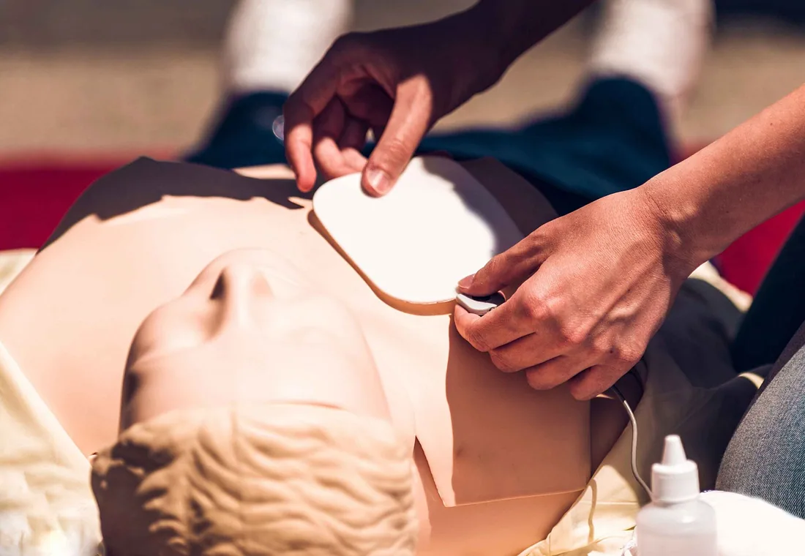

Szkolenie z pierwszej pomocy dla firm i instytucji
Przyjeżdżamy do Twojej siedziby z fantomami i defibrylatorem szkoleniowym. Zajęcia prowadzi czynny ratownik medyczny, a ćwiczenia zajmują więcej czasu niż teoria. Każdy uczestnik dostaje imienne zaświadczenie, a pracodawca listę zbiorczą do dokumentacji.

Kto ma obowiązek przeszkolić pracowników
Obowiązek wynika wprost z Kodeksu pracy i dotyczy każdego pracodawcy — także biura na dziesięć osób. Pracodawca ma zapewnić środki niezbędne do udzielania pierwszej pomocy, wyznaczyć pracowników do jej udzielania i zapewnić łączność ze służbami ratowniczymi.
Najczęstszy błąd: uznanie, że instruktaż BHP wystarczy. Nie wystarczy — szkolenie okresowe BHP nie obejmuje ćwiczeń z resuscytacji ani obsługi defibrylatora, a inspektor pyta o wyznaczone osoby imiennie i o dowód ich przeszkolenia.
Ilu pracowników wyznaczyć — jak to policzyć
Przepis nie podaje liczby ani procentu. Wymaga, żeby obsada odpowiadała zagrożeniom i wielkości zakładu. W praktyce stosuje się prostą regułę:
- Co najmniej jedna przeszkolona osoba na każdej zmianie — jeśli pracujecie na trzy zmiany, jedna osoba to za mało.
- Co najmniej jedna osoba na każdą lokalizację — oddzielny magazyn, druga hala, biuro w innym budynku liczą się osobno.
- Zapas na urlopy i zwolnienia — zwykle dwie osoby tam, gdzie z wyliczenia wychodzi jedna.
- Więcej tam, gdzie ryzyko jest wyższe — obróbka mechaniczna, praca na wysokości, chemia, prąd, wózki widłowe.
Przykład: zakład produkcyjny, 120 osób, trzy zmiany, hala i magazyn. Z reguły wychodzi sześć do ośmiu przeszkolonych osób — po dwie na zmianę plus obsada magazynu. Przy zapytaniu policzymy to dla Twojej struktury i wpiszemy do oferty.
Warianty szkolenia
Wszystkie prowadzimy u klienta. Sala to zwykła salka konferencyjna albo świetlica — potrzebujemy miejsca, żeby położyć fantomy na podłodze.
Szkolenie podstawowe — 4 godziny
Dla pracowników wyznaczonych do udzielania pierwszej pomocy w zakładzie. Resuscytacja dorosłego, defibrylator AED, zadławienie, krwotok, omdlenie, postępowanie przy urazie. Każdy uczestnik wykonuje pełen cykl uciśnięć na fantomie i sam używa defibrylatora.
Szkolenie rozszerzone — 8 godzin
To samo plus scenariusze dopasowane do Waszych stanowisk: porażenie prądem, oparzenie chemiczne, uraz przy maszynie, upadek z wysokości, wypadek z wózkiem widłowym. Kończy się ćwiczeniem w warunkach zbliżonych do hali, nie przy stole.
Kurs kwalifikowanej pierwszej pomocy (KPP) — 66 godzin
Dla straży zakładowej, ochrony i jednostek współpracujących z systemem ratownictwa. 25 godzin teorii i 41 godzin zajęć praktycznych, zakończone egzaminem teoretycznym i praktycznym. Zaświadczenie jest ważne trzy lata, po tym czasie potrzebna jest recertyfikacja.
Pierwsza pomoc pediatryczna
Dla żłobków, przedszkoli, szkół i placówek opiekuńczych. Resuscytacja niemowlęcia i dziecka, zadławienie, drgawki gorączkowe, urazy na placu zabaw, reakcja alergiczna. Ćwiczenia na fantomie niemowlęcym i dziecięcym.
Dzień bezpieczeństwa w firmie
Format na piknik pracowniczy albo dzień BHP: stanowiska ćwiczeniowe, przez które przechodzi cała załoga, plus pokaz z pozoracją. Nie zastępuje szkolenia z zaświadczeniem, ale dociera do ludzi, których na szkolenie nie wyślecie.
Program godzina po godzinie — wersja 4-godzinna
- 0:00–0:30 — obowiązki prawne, ocena miejsca zdarzenia, bezpieczeństwo własne, wezwanie pomocy i co powiedzieć dyspozytorowi.
- 0:30–1:45 — resuscytacja dorosłego: ocena przytomności i oddechu, pozycja rąk, tempo i głębokość uciśnięć. Każdy uczestnik na fantomie z informacją zwrotną.
- 1:45–2:30 — defibrylator AED: kiedy użyć, jak nakleić elektrody, bezpieczeństwo zespołu. Ćwiczenie na trenażerze.
- 2:30–3:15 — krwotoki i opatrunki, zadławienie u dorosłego, pozycja bezpieczna, omdlenie i drgawki.
- 3:15–4:00 — scenariusze z Waszego zakładu, pytania, wydanie zaświadczeń.
Wersja 8-godzinna rozszerza część praktyczną i dokłada urazy typowe dla Waszej branży. Program KPP jest określony przepisami i przekazujemy go w całości przed kursem.
Sprzęt, który przywozimy
- Fantomy dorosłego z informacją zwrotną o jakości uciśnięć — nie ma nauki bez pomiaru
- Fantom dziecięcy i niemowlęcy przy szkoleniach dla placówek
- Defibrylator szkoleniowy z elektrodami treningowymi i scenariuszami
- Materiały opatrunkowe i opaski uciskowe do ćwiczeń
- Pozoracja ran przy szkoleniach rozszerzonych
- Maski i środki do dezynfekcji fantomów między uczestnikami
Po Waszej stronie zostaje tylko sala i rzutnik, jeśli jest.
Ile kosztuje szkolenie
Dokładnej kwoty nie da się podać bez znajomości liczby osób i miejsca, ale nie zostawiamy Cię z odpowiedzią „to zależy”. Poniżej widełki, z których wychodzimy przy wycenie.
Od czego zależy cena
- Liczba uczestników — przy grupie powyżej 20 osób cena za osobę spada, bo koszt dojazdu i sprzętu rozkłada się szerzej.
- Liczba grup ćwiczeniowych — ćwiczenia prowadzimy w grupach po 6–10 osób, większa załoga to drugi instruktor albo druga tura.
- Odległość — dojazd poza nasz stały teren doliczamy osobno.
- Termin — weekend i dni wolne są droższe.
- Zakres — pozoracja ran i scenariusze branżowe wymagają dłuższego przygotowania.
Wycenę dostajesz na piśmie z jedną kwotą za całość, nie z widełkami. Faktura z odroczonym terminem dla firm i instytucji.
Zaświadczenie i kontrola PIP
Po szkoleniu zostają Wam trzy dokumenty:
- Zaświadczenie imienne dla każdego uczestnika — z datą, liczbą godzin i zakresem tematycznym, do teczki pracownika.
- Lista zbiorcza przeszkolonych dla pracodawcy — to jest dokument, który pokazuje się inspektorowi.
- Program szkolenia z podpisem prowadzącego — dowód, że zakres odpowiadał zagrożeniom w zakładzie.
Do tego zalecenie, kogo warto przeszkolić dodatkowo i kiedy odświeżyć. Przepis nie narzuca terminu powtórki; w praktyce robi się to co dwa–trzy lata, bo umiejętność uciskania klatki piersiowej zanika bez ćwiczeń szybciej, niż się wydaje.